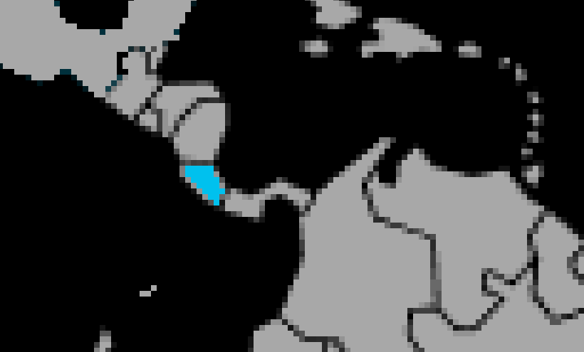

Systématique
- Ordre : Cichliformes
- Famille : Cichlidae
- Genre : Amatitlania
- Espèce : Amatitlania sajica
Amatitlania sajica est un cichlidé d’Amérique centrale de taille moyenne, proche par son comportement d’Amatitlania nigrofasciata mais souvent considéré comme un peu plus calme. [web:79][web:82]
Les adultes atteignent 10 à 12 cm dans la nature, un peu moins en aquarium, avec un corps ovale marqué d’une barre sombre en forme de T sur les flancs. [web:79][web:82]
L’espèce est territoriale, surtout en période de reproduction, mais reste souvent légèrement moins agressive que d’autres cichlidés d’Amérique centrale de taille comparable. [web:79][web:85]
Elle se maintient en couple ou en petit groupe dans un bac offrant beaucoup de cachettes, zones rocheuses et racines, avec des plantes robustes que les poissons laissent généralement tranquilles hors période de ponte. [web:79][web:82]
Mode : pondeur sur substrat, souvent en cavité; la femelle pond dans une grotte ou sous une pierre, et le mâle féconde et défend le territoire environnant. [web:79][web:82]
Les deux parents assurent une garde attentive des œufs et des alevins, les déplaçant parfois dans différentes cachettes; la reproduction est considérée comme relativement facile en aquarium. [web:79][web:82]
Dimorphisme sexuel : les mâles sont plus grands, peuvent développer une bosse nucale et des nageoires plus allongées, tandis que les femelles prennent une teinte plus jaune‑doré sur les nageoires lorsqu’elles sont prêtes à pondre. [web:82][web:79]
Espérance de vie : en captivité, Amatitlania sajica vit en général 8 à 10 ans si l’aquarium est adapté et bien entretenu. [web:82][web:85]
L’espèce provient de rivières et ruisseaux du Costa Rica, avec des substrats sableux et rocheux, des racines et des cavités naturelles formant de nombreux abris. [web:79][web:82]
Répartition
Origine naturelle :
- Costa Rica, Amérique centrale.
- Rivières et ruisseaux se jetant dans le Pacifique ou l’Atlantique.
Amatitlania sajica est typique des cours d’eau tropicaux à courant modéré, riches en roches, racines et caches, avec des zones de sable pour fouiller. [web:79][web:82]
Paramètres de maintenance
Température : 23 à 28 °C.
pH : 6,5 à 7,5, de légèrement acide à neutre.
GH : 5 à 20 °dGH, espèce assez tolérante.
Courant : faible à modéré, avec une bonne filtration et des changements d’eau réguliers. [web:79][web:82]
Volume conseillé : au minimum 200 L pour un couple, davantage en communautaire avec d’autres cichlidés. [web:79][web:82]
Régime alimentaire
Régime : omnivore; il consomme insectes, petits invertébrés, détritus et matière végétale dans la nature. [web:79][web:82]
En aquarium, il accepte très bien les granulés et paillettes pour cichlidés, complétés par des proies congelées et quelques apports végétaux. [web:79]
Un régime varié, distribué en plusieurs petites rations, soutient la croissance, la reproduction et limite les risques de pollution organique. [web:79][web:82]